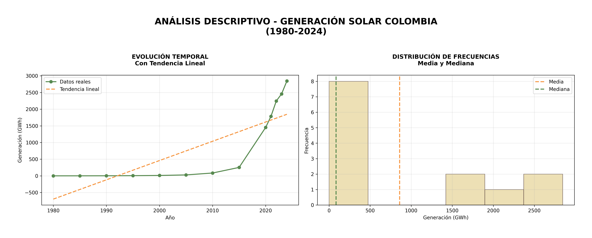
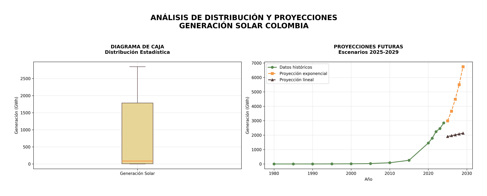
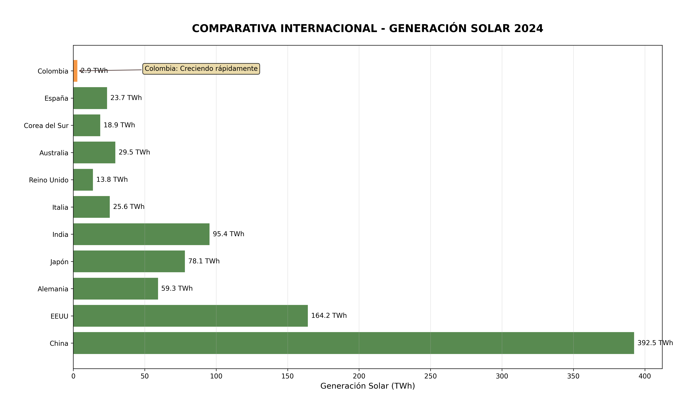
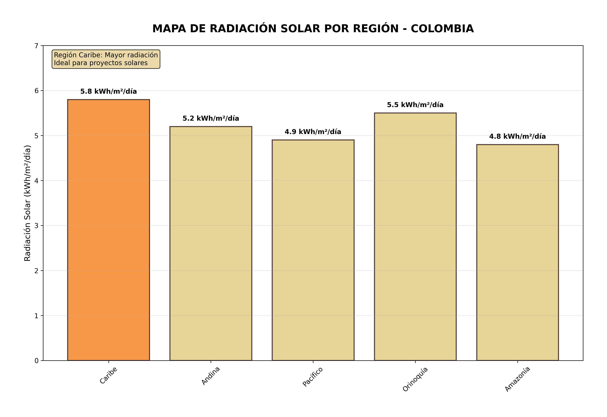

Análisis de Generación Solar en Colombia (1980-2024)
📈 Generación Solar Colombia
Este gráfico muestra el análisis descriptivo de la generación de energía solar
en Colombia desde 1980 hasta 2024. Incluye dos visualizaciones principales:
Evolución Temporal: Muestra la tendencia histórica de la
generación
solar a lo largo del tiempo, con una línea de tendencia que indica el patrón de crecimiento. Se
observa un
crecimiento exponencial especialmente notable a partir de 2010.
Distribución de Frecuencias: Presenta un histograma que muestra
cómo se
distribuyen los valores de generación solar, con indicadores de media y mediana. La distribución
muestra una
asimetría positiva, indicando que la mayoría de los valores están por debajo del promedio, con
algunos valores
muy altos que elevan la media.

Análisis: El análisis revela varios patrones importantes en la generación solar
colombiana:
- La generación solar mantuvo niveles mínimos hasta aproximadamente 2010, cuando comenzó un crecimiento acelerado
- La mediana es significativamente menor que la media, confirmando la asimetría positiva de la distribución
- El crecimiento post-2010 coincide con políticas de incentivo a las energías renovables en Colombia
- La tendencia lineal muestra una pendiente positiva pronunciada, indicando un crecimiento sostenido
- Los valores atípicos en años recientes reflejan proyectos de gran escala que han incrementado sustancialmente la capacidad instalada
- La brecha entre media y mediana sugiere que pocos proyectos de gran escala contribuyen desproporcionadamente a la generación total
📊 Distribución y Proyecciones de la Energía Solar en
Colombia
Este gráfico presenta dos visualizaciones complementarias para el análisis de la
generación
solar en Colombia:
Diagrama de Caja: Muestra la distribución estadística de los
datos
de generación solar a través de un diagrama de caja y bigotes. Este gráfico permite visualizar la
mediana, los cuartiles y
los valores atípicos de la serie histórica.
Proyecciones Futuras: Presenta proyecciones de generación solar
para el
período 2025-2029 basadas en dos modelos diferentes, proyección exponencial y proyección lineal,
comparadas con los
datos históricos.

Análisis:El análisis de distribución y proyecciones revela insights importantes:
- El diagrama de caja muestra una distribución con varios valores atípicos en el extremo superior, confirmando el crecimiento acelerado reciente
- La mediana se encuentra en la parte inferior de la caja, indicando una distribución sesgada hacia valores bajos con algunos valores muy altos
- Las proyecciones exponenciales sugieren un crecimiento más acelerado que las lineales, basándose en la tendencia reciente
- Ambos modelos proyectan un crecimiento continuo, aunque con diferentes trayectorias e implicaciones para la planificación energética
- La brecha entre proyecciones lineales y exponenciales sugiere incertidumbre en la tasa de adopción futura de energía solar
- El modelo exponencial asume una aceleración continua del crecimiento, posiblemente impulsada por disminución de costos y políticas favorables
- El modelo lineal representa un escenario más conservador, extrapolando la tendencia histórica sin aceleración adicional
🌍 Comparativa Internacional de Generación Solar
2024
Este gráfico de barras horizontales presenta la comparación de la generación
de energía solar entre 11 países,
incluyendo Colombia, para el año 2024. Utiliza una escala en Teravatios-hora (TWh) que permite
visualizar las enormes diferencias en
la capacidad de generación entre naciones.

Análisis: El gráfico de comparativa internacional revela la posición aún
incipiente de Colombia en el panorama global de generación de energía
solar. Con apenas 4.9 TWh, el país se ubica en el último lugar entre las once naciones
representadas, mostrando una brecha significativa frente a los líderes mundiales. China domina
abrumadoramente el sector con 392.5 TWh, seguida por Estados Unidos con 164.2 TWh e India con
95.4 TWh. Esta comparativa evidencia que Colombia representa apenas el 1.2% de la generación
china, el 3% de la estadounidense y el 5% de la india, lo que refleja el largo camino por
recorrer en materia de desarrollo de infraestructura solar.
La nota destacada que menciona "Colombia: Creciendo rápidamente" sugiere que, a pesar de la
posición actual, el país está experimentando una trayectoria de crecimiento acelerado. Este dato
contextual es crucial, pues indica que aunque la base de generación es todavía modesta en
términos absolutos, la tasa de expansión del sector solar colombiano podría estar entre las más
dinámicas de la región. La presencia de países como España (23.7 TWh) y Australia (29.5 TWh) en
rangos medios muestra que naciones con características similares a Colombia han alcanzado
niveles significativos de generación, sirviendo como referentes alcanzables para el desarrollo
futuro.
🗺️ Mapa de Radiación Solar por Región
Colombiana
Este gráfico de barras presenta la radiación solar promedio en las
principales regiones de Colombia, medida en kWh/m²/día.

Análisis: El mapa de radiación solar por regiones colombianas presenta una
oportunidad estratégica fundamental para el desarrollo energético del país. La Región Caribe
emerge como el epicentro del potencial solar nacional con 5.8 kWh/m²/día, seguida por la
Orinoquía (5.5 kWh/m²/día) y la Región Andina (5.2 kWh/m²/día). Estos valores de radiación son
excepcionalmente favorables, superando el promedio global y ubicando a Colombia entre los países
con mayor potencial solar en Latinoamérica.
La distribución geográfica de la radiación solar muestra que el país cuenta con ventajas
naturales significativas, particularmente en las regiones norte y oriental. El hecho de que la
Región Caribe, tradicionalmente menos desarrollada industrialmente, posea el mayor potencial
solar crea una oportunidad única para descentralizar la generación energética y promover
desarrollo económico regional. La Amazonía, con 4.8 kWh/m²/día, aunque con el valor más bajo,
todavía mantiene niveles adecuados para proyectos de electrificación rural y sistemas autónomos,
cruciales para esta región de difícil acceso a la red eléctrica convencional.
📚 Fuentes de Información
International Energy Agency. (2024). World Energy Outlook 2023. https://www.iea.org/reports/world-energy-outlook-2023
International Renewable Energy Agency. (2024). Renewable Capacity Statistics 2024. https://www.irena.org/Publications/2024/Mar/Renewable-capacity-statistics-2024
BP. (2023). Statistical Review of World Energy 2023. https://www.bp.com/en/global/corporate/energy-economics/statistical-review-of-world-energy.html
Ritchie, H., Roser, M., & Rosado, P. (2022). Renewable Energy. Our World in Data. https://ourworldindata.org/renewable-energy